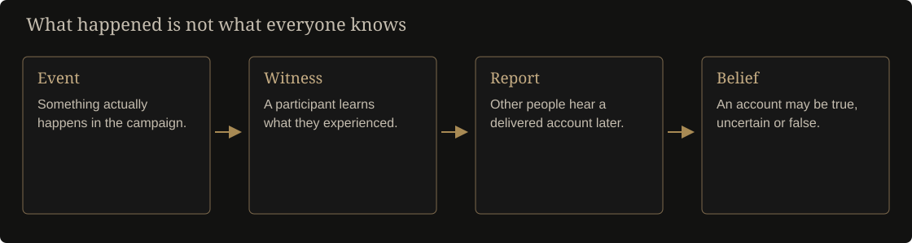

Getting to know people
Learn what people care about, what they know, and why their answers differ.
Personalities, interests, and private concerns
#Characters have lasting personalities rather than a fresh personality each time you open chat. They can have hobbies, hopes, fears, values, attachments, a public manner, and private concerns. Compassion, honor, loyalty, responsibility, courage, judgment, and social boldness help shape their choices. Boldness in conversation does not necessarily mean courage in battle.
Newer campaigns use richer authored backgrounds and stronger individual interests. Older campaigns retain their established profiles instead of silently replacing everyone's life story. Interests give you subjects to explore; they do not guarantee that every conversation will return to the same hobby or that an interest grants a mechanical skill.
Personality can develop through meaningful experiences over time. Repeating the same compliment in one sitting is not a reliable way to rewrite someone's beliefs.
What NPCs know, believe, and keep secret
#Reign separates actual world events from what each person has learned. A participant may know a battle immediately, while a distant court hears about it later. A private conversation is not automatically public. Someone may know your name or deeds without recognizing your face.
An NPC can repeat a mistaken report or deliberately lie. You can ask who told them, challenge a claim, or provide evidence. Persuasive speech can affect belief without changing what really happened. Conflicting accounts are not automatically a continuity bug.
Memory follows participants and context. People can recall shared conversation, commitments, important events, and experiences. They should not inherit the private contents of an unrelated person's conversation simply because they live in the same town.

Relationships, visible status, and skills
#Relationships are directional: you may like a person more than they like you. Time together, compatible personalities, conversation, shared obligations, and major actions can change that relationship. A lasting favor or betrayal can matter beyond one exchange.
Reign hides exact NPC relationship scores throughout much of Bannerlord's interface. Read behavior, known history, and social clues rather than treating everyone as a visible score. Reveal All Character Relationships in MCM is an optional cheat. Skills remain visible in their normal mechanical interfaces.
Clothing, equipment, holdings, reputation, and visible position affect how others perceive you. NPCs do not automatically know the exact amount in your purse. Dressing like a courtier and possessing a courtier's actual power are different things.
Added nobles and wanderers
#Reign adds landless noble households to deepen local courts and expands the world of persistent characters. A landless court household is not automatically a field army; acquiring land can change its opportunities. Younger family members, local residents, and wandering adults serve different roles.
Wanderers have individual identities and culture-appropriate backgrounds. Recruitment and companion limits still matter. Once someone is a persistent Reign character, their established identity and conversation history should not be treated as a disposable tavern extra.
Eligible notables and encountered residents can use supported recruitment routes too. A recruited notable's former service and workshop dialogue need to follow their real current status; a former job does not grant you ownership of the town's business. Use an actual workshop-transfer agreement for a change of ownership.
With War Sails, the Nord towns and castles have 13 additional tier-one court households and 78 authored nobles, with family ties, biographies, and shared portraits. Start a new campaign to meet these households. Their clans can gain rank normally. The content is installed and broader new-campaign acceptance is still open.